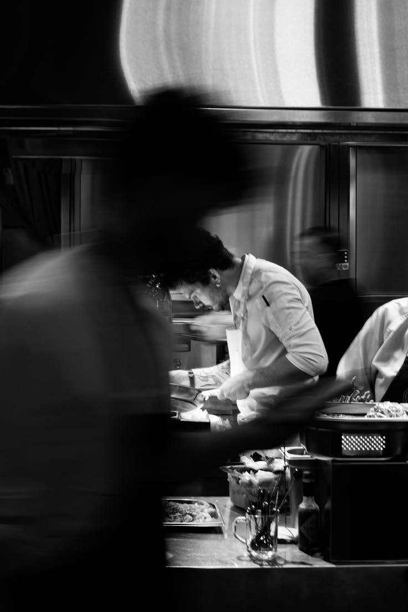

Nouveau Dining, şehrin kalbinde ev konforunu İtalyan bistro kültürüyle buluşturuyor. 72 saat dinlendirilen hamurumuz, her sabah seçilen taze malzemelerimiz ve yavaş pişen soslarımızla sade ama unutulmaz tabaklar hazırlıyoruz. Buraya yemeğe değil, keyifli bir sofraya geliyorsunuz.